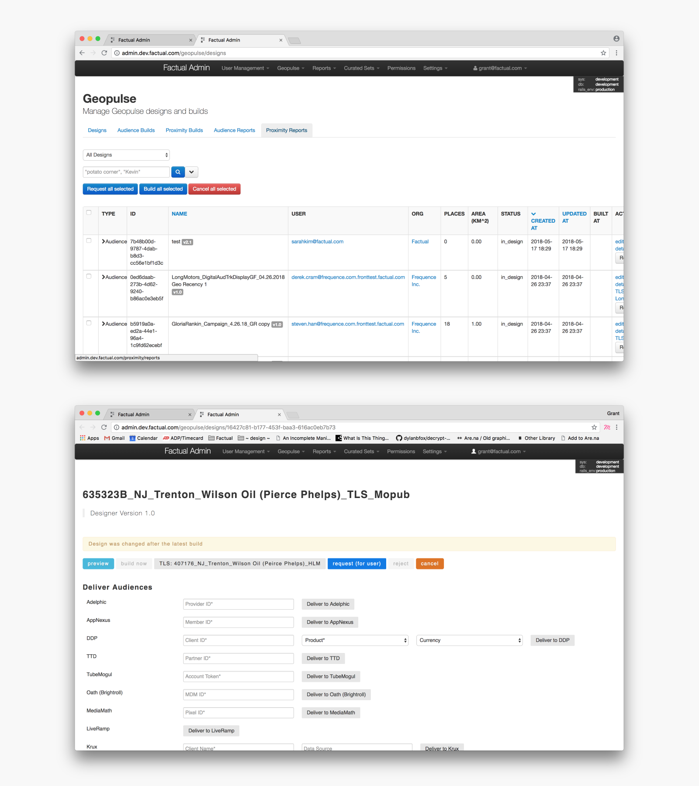
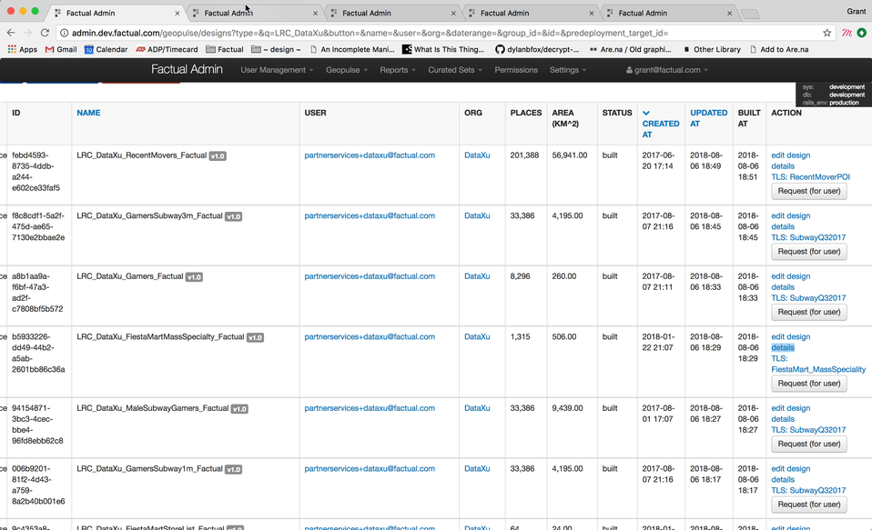
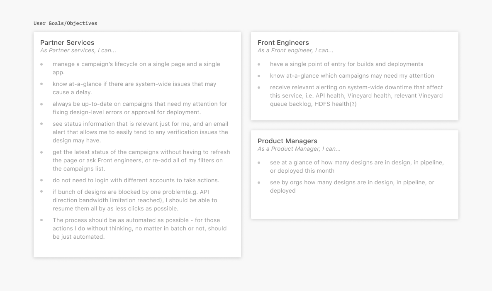
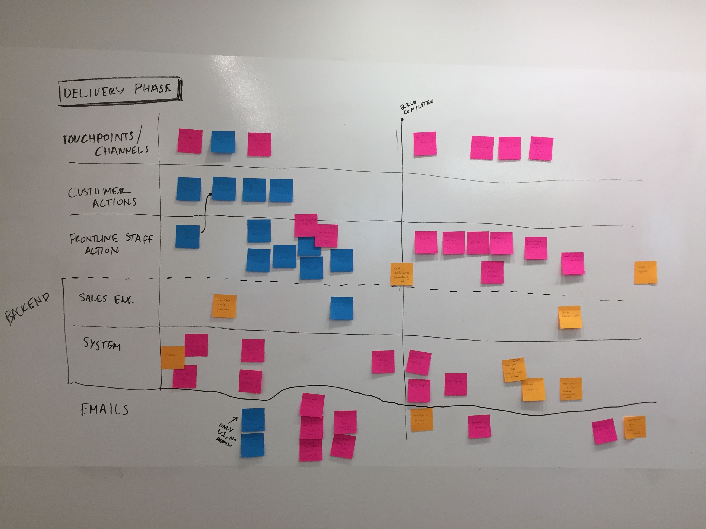
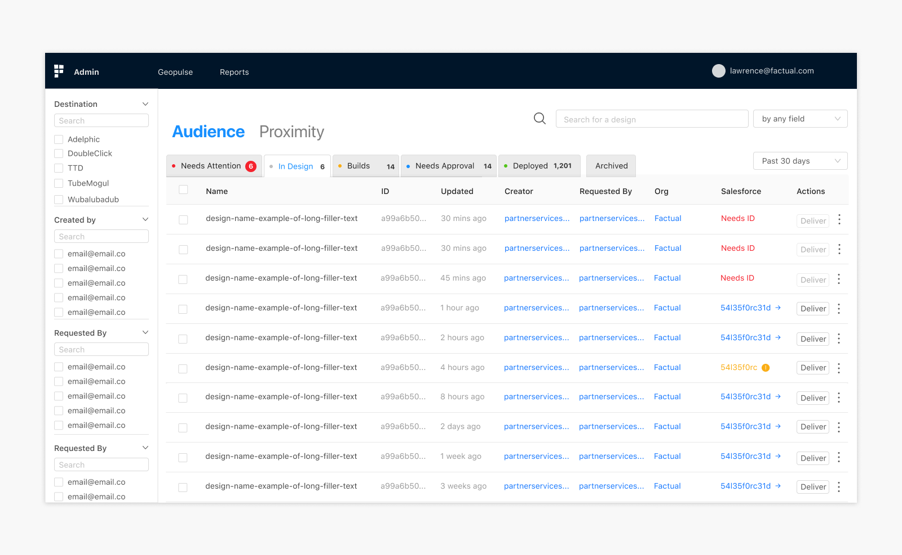
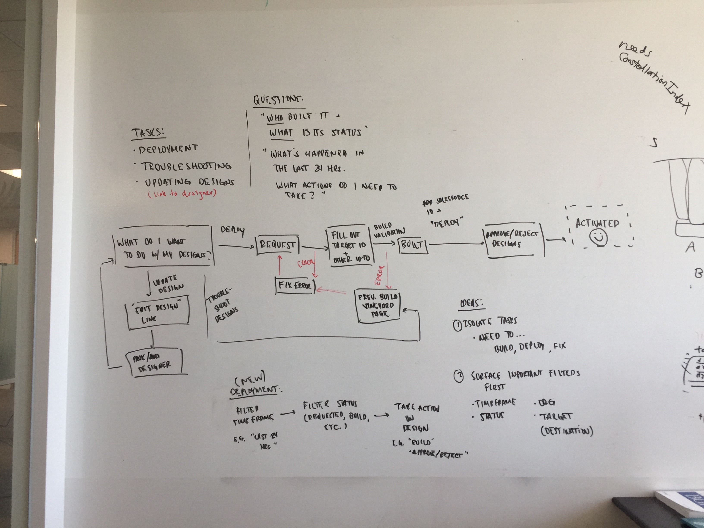
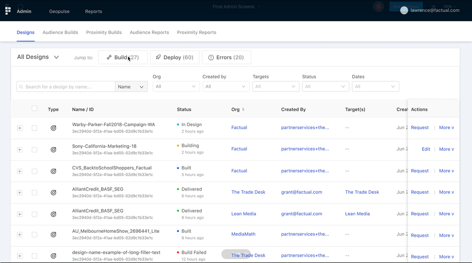
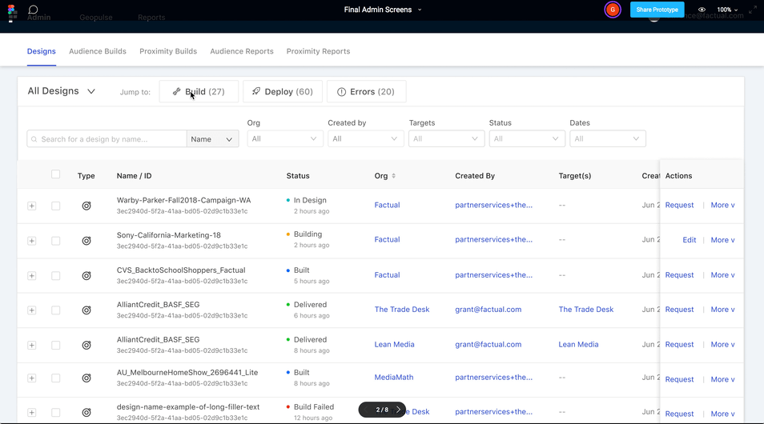
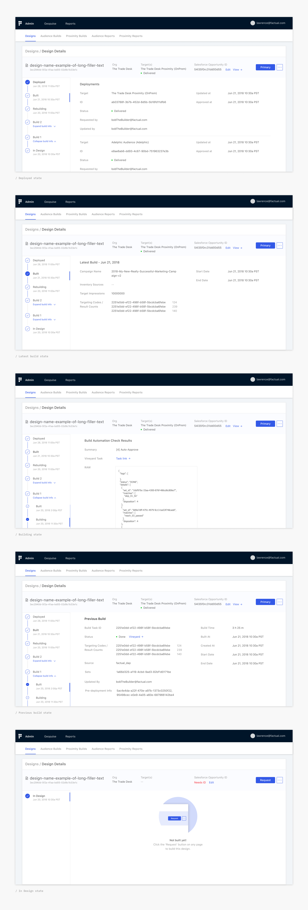
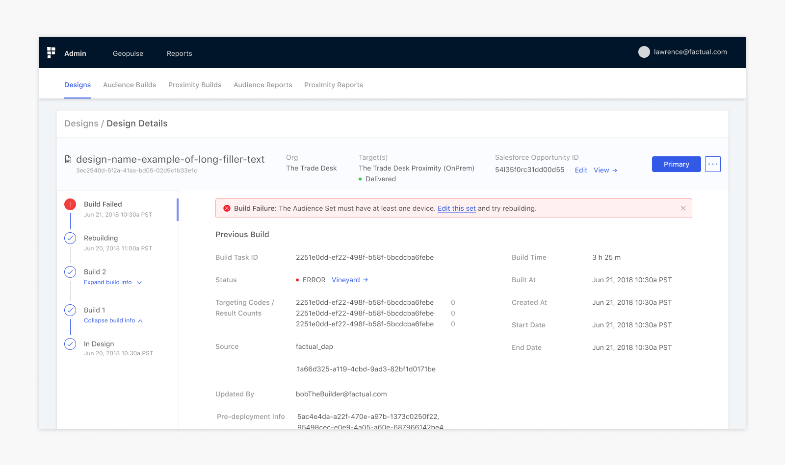

Admin Redesign for Factual
Overview
During summer 2018, I interned at Factual where I was the design lead for a redesign of an internal tool called Admin. We focused on the Geopulse Designs page that let Factual’s outbound teams manage clients’ marketing campaigns throughout their lifecycles. We designed features that significantly sped up campaign launch time, improved information accessibility, and reduced the number of touch points from 6 to 1.
This project was interesting in that we were designing solutions only for power-users. This brought about a unique and complex set of challenges. Through the project, we learned to embrace the complexity of the problem rather than simplify it.
Team
Matt Inouye (Product Manager)
Sarah Kim (Front Engineer)
Enyu Hsu (Front Engineer)
Lawrence Yong (Designer)
Grant Kalasky (Design Lead)
Challenge
Think of Admin as a control tower where Factual teams manage all customer-facing UIs and systems. Admin was initially created by a few PMs and engineers to better handle customer-facing systems. This included design management, user account creation and permissions, reports, and more. When Admin was first built, design was an afterthought. It was a quick solution that served the immediate needs of Factual teams.
As Factual began to scale, however, problems with Admin became clearer. The system had poor usability, information discovery was challenging, and managing clients became inefficient. Thus, we were tasked with redesigning Admin.
Refining Scope
Upon starting this project, the initial scope was undefined. We thought it would be helpful to get a better understanding of the complexities of Admin before moving forward. It didn’t make sense, nor was it feasible, to tackle a redesign of the whole system. However, understanding all of its pieces allowed us to focus on areas that required the most work and were most impactful. After conducting a UI audit and talking to Factual internal teams that used the interface, there was a clear need to redesign the “Designs” pages under the Geopulse section of Admin.
Embracing Complexity
With a more specified scope, we scheduled meetings with internal users across various teams in order to understand the inner-workings of Admin, specifically the workflow of delivering designs through the UI. Through these individual interviews, we learned that the workflow was extremely complex, rife with user frustrations. But that meant a lot of exciting design work!
Interview Insights
Too many touch points
Currently, Factual teams use 4 interfaces to manage and deliver marketing campaigns. They also have to log in to different accounts for the various clients they’re managing in order to take certain actions. This results in a lot of time spent navigating between different UIs, logging into and out of accounts, etc. rather than time spent launching campaigns.
Inefficient delivery process
To launch a client’s marketing campaign, a Factual member has to click into each design’s “details” page in order to select the data service provider (DSP) and enter additional information needed to deliver the campaign. This becomes extremely inefficient with campaigns that contain a lot of designs.
Lagging campaign information

A common frustration across teams using this tool was the inability to stay up-to-date with campaigns they were managing. This included relevant status information and design-level errors that might block campaigns. It was also difficult for users to tell at-a-glance what campaigns needed immediate attention.
Identifying Objectives
From these interviews, we were able to identify main user objectives for the different teams that interfaced with this tool most frequently:
While we had a good idea of the current user-flow, we invited members from the Product, Partner Services, and Front team to discuss how they interact with this piece of Admin. We booked a room for the afternoon and documented the intricacies of delivering campaigns through the current UI. This included touch points, customer actions, partner services’ actions, sales engineering actions, email notifications, and more.
From this meeting, we were confident in our understanding of this complex system:

Ideation
We then held a brainstorming session with members from the same teams. We hoped this would surface interesting and diverse solutions that we as designers might not be able to see. We posed the meeting as a design task in order to encourage more active participation and discussion of ideas.
Participants were asked to put themselves in the shoes of a member of the Partner Services team. The task was to come up with a more efficient way to manage designs in Admin for a big marketing campaign.
To help with ideation, we posed some guiding questions like: How might we find designs more easily? How might we keep design deployment in one place? How might we make troubleshooting designs quicker/easier? After sketching our ideas, we discussed our solutions:
Metrics of Success
Before jumping into designs, we wanted to survey all internal users to: (1) obtain metrics by which we could measure the success of the redesign, and (2) distill what information was important to completing users’ workflows.
From the survey, we defined 3 key metrics to focus on:
- Increase user satisfaction score for Admin Geopulse Design UI from 65% to 100%
- Decrease the number of manual touch-points required for managing self-service campaigns from 6 to 1
- Decrease time to delivery by 30%
Early Designs
With a more holistic understanding of Admin and some good ideas from the brainstorming session, we put together some mid-fidelity designs. Each solution emphasized a particular use-case but seemed to lack the impact we were hoping for.
We eventually landed on a design that we were comfortable with showing to internal users. During the early iterations of the project, we asked for open-ended, high-level feedback about the layout and information hierarchy. During the second feedback session, a user’s comments struck a chord with me and helped me break through a creative block I was having.
Design for Efficiency
With two rounds of feedback completed, the overarching goal of the project became clear: efficiency.
We want to empower internal users to get the most out of the time they spend in admin.
Designing for quick and easy task completion became our highest priority. With this in mind, I went to the whiteboard to sketch out a more efficient workflow. I wanted to focus on the 3 main tasks users would want to complete while in this part of Admin: Deployment, Troubleshooting, and Updating designs. It became clear that we should be optimizing for bulk actions.
Design Decisions
Fast context switching
In order to optimize for bulk actions, we wanted to provide users an easy way to “jump to” any one of the main workflows within this part of Admin. Context-switching becomes really important when dealing with multiple campaigns for various clients. This feature allows users to quickly dive into a particular context, bulk select all designs associated with the campaign, and take action on them.
Deliver entire campaigns, not individual designs
In conjunction with fast context switching, we wanted to provide users with an additional mechanism to further refine their searches, find all designs associated with a campaign, and take action on them. We designed quick and intuitive ways to query or filter designs that matched users’ mental models of how they categorized designs. This way, users can jump into a certain context, refine the table results to a specific campaign, select all designs, and take action. This is far more efficient than clicking into each design and delivering them individually.
Improved information hierarchy
The previous “Design Details” page made it difficult to find relevant information about designs while in different statuses. Now, users can see a design’s entire history including its deployment, the latest build, previous build cycles, and more. Rather than surface all information about a design upfront, we provide it in a more contextually relevant way that improves readability and accessibility.
Troubleshooting, made easier
Before the redesign, teams would spend a significant amount of time troubleshooting designs. This was largely because there was no information surfaced about the type of error or how to resolve them if they were common issues. We surfaced Vineyard links (internal system that logs design errors) within the table rows, rather that hide them in the design details page. In the design details page, we created alerts that would notify users of: (1) the type of error and (2) how to resolve it. We also used these design decisions to make the email notification system more helpful and informative.
Takeaways
One of the biggest lessons I learned while working on this project was the importance of embracing complexity rather than simply abstract it away. We were able to deal with a very complex process, take time to understand its nuances, and make a much better experience.
Another important lesson I learned was the value of putting yourself in the user’s shoes. While this might be a trite idea in the design community, it was very helpful to deeply understand their workflow in order to uncover influential ideas early on.